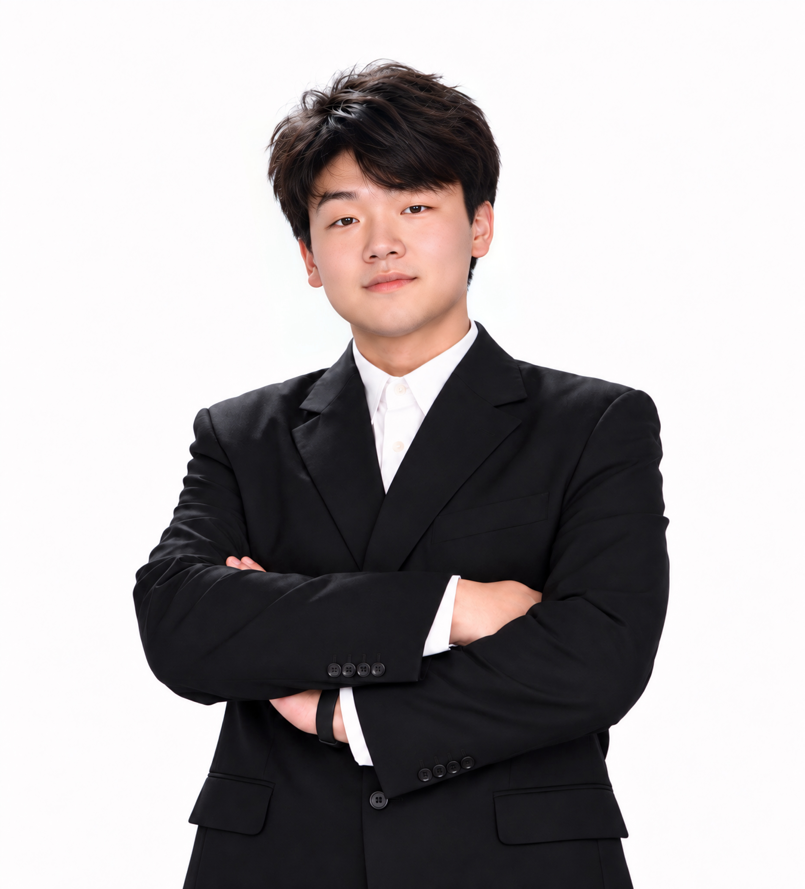

THE PERSON BEHIND THE WORK02 / ABOUT
Curiosity, with care.
保持好奇，也保持对人的关心。

CHEN HAO
PRODUCT DESIGNERA LITTLE ABOUT ME / 福州，中国
从真实生活出发，
让设计被感知。
我是 Chen Hao，就读于福建理工大学产品设计专业。我的实践跨越思辨产品、公共服务、桌游与可穿戴装置，从背景研究、观察和访谈开始，将问题转化为情境、规则、形态与交互。
制作是我思考的一部分。搭建模型、连接传感器、测试游戏，让抽象的判断成为可以体验、讨论与修改的作品。摄影、影像记录和乡村田野实践，也持续影响着我观察人与环境的方式。
EDUCATION福建理工大学 · 产品设计本科在读2023.09 — 2027.06
GPA 3.41 / 5 · 84.13 / 100
PRACTICE研究 · 交互 · 实体原型Product / Service / Speculative Design
01 / PROFESSIONAL EXPERIENCE
实践，持续发生。
Tesla 上海超级工厂
工业设计实习生协助汽车外观、内饰及智能座舱设计，参与草图绘制、三维建模与方案细化。
整理设计图纸与材料样本，开展竞品分析并完成分析报告。
中国科学院北京纳米能源与系统研究所
实习生通过社交平台与问卷收集健身人群的行为数据及反馈，整理并交付分析报告。
协助合作企业的品牌标志与服务方案设计。
02 / ACTIVITIES & FIELDWORK
在现场，看见真实。
交互产品与服务设计夏令营
Summer Camp for Interactive Product & Service Design参观 Ferrari 工厂，了解汽车工业生产与设计；学习平面设计、三维建模与 3D 打印原型，并应用于 Azure Clean。
参与职业求职课程，了解设计行业的发展方向、人才需求与就业趋势。
香港理工大学设计学院
Design Discovery Camp · Character Design Challenge学习角色设计，以中国非物质文化遗产为主题设计滴水兽茶宠「Drip Wealth」。
福建宁德 · 利洋村
冬季社会实践 / 调研与摄影调研传统建筑与地方特色产品，围绕地方景观与柿子产品进行再设计和 IP 形象设计，并负责活动摄影记录。
福建理工大学学生会
宣传部负责人、主席团成员 / 宣传部成员拍摄学生会活动照片及视频，用于新闻和宣传；代表设计学院参加校际影像与摄影比赛。
福建漳州 · 后坊村
暑期乡村田野实践 / 适老化与摄影调研留守老人的居住与生活条件，重新规划住宅布局、设置扶手，改善空间的适老性，并负责摄影记录。
福建福州 · 大坪村
冬季社会实践 / 地方产品与公共艺术调研地瓜种植与销售，设计地方产品 IP。参访曾融生院士、曾焕乾烈士故居及平潭相关主题展馆。
参与绘制超过 40 平方米的墙绘，围绕红色文化传承、乡村振兴及闽台文化交流展开。
福建莆田 · 象星村
暑期社会实践 / 包装与影像调研地方传统建筑与油茶产品，设计茶油产品包装，制作社区旅游宣传视频，并承担摄影记录。
03 / HONORS & AWARDS
被看见的努力。
MUSE Design Awards · Silver Winner
产品设计 / Ageing 类别 · 团队项目香港理工大学 Character Design Challenge · Champion
Design Discovery Camp · 冠军福建省大学生创新大赛 · 银奖
高教主赛道福建省大学生暑期社会实践 · 优秀实践成果奖
2025 年项目 · 团队暑期乡村田野实践 · 优秀成果、个人与团队奖
2024 年项目 · 团队非遗春节影像比赛 · 三等奖
福建理工大学 · 2025新媒体运营优秀个人
福建理工大学省大学生寒假社会实践 · 优秀实践团队奖
2024 — 2025福建省青年志愿服务短视频大赛 · 二等奖、最佳人气奖
青年志愿服务文化交流大会暨首届“青春志愿”创意短视频大赛04 / VOLUNTARY ACTIVITIES
参与，也是一种设计。
福建理工大学 · 志愿服务
校园影像、公共艺术与迎新记录设计学院运动会精彩瞬间；协助绘制校园风景及学校 IP 主题墙绘；为新生指引路线并协助搬运行李。
从观察到体验My approach
01 / OBSERVE走进真实情境
从访谈、田野调查和日常观察中，理解人的需要与处境。
02 / EXPLORE提出新的问题
用服务蓝图、情境故事和概念探索，寻找不同的设计切入点。
03 / MAKE让想法被感知
通过界面、实体模型与传感器原型，让概念成为可以体验的设计。
05 / TOOLKIT
从想法，到制作。
INTERFACE & VISUALFigma · Photoshop · CorelDRAW
FORM & PROTOTYPINGRhino · KeyShot · Creo · Arduino
IMAGE & STORYTELLINGLightroom · CapCut · 摄影与影像
旅行，摄影，
以及一杯刚好的咖啡。
走出设计的语境，重新发现日常。
那些微小而真实的瞬间，也在塑造我的设计视角。
HAVE SOMETHING IN MIND?
让下一个想法，发生。
一起聊聊 ↗